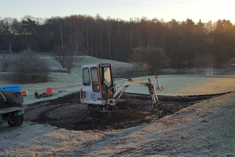
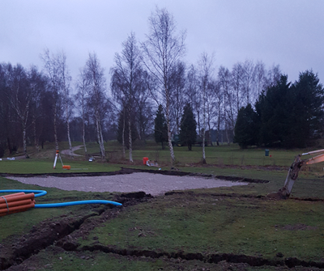

<div class="pages">
  <div data-page="567-17-tee-51-55-udvides" class="page navbar-fixed toolbar-fixed" >
    <div class="navbar">
      <div class="navbar-inner">
        <div class="left">
          <a href="#" class="link back icon-only"><i class="icon icon-back"></i></a>
          <!-- <a href="#" class="back link icon-only"><i class="icon icon-back"></i></a> -->
        </div>
        <div class="center">17. tee 51/55 udvides</div>
        <!-- <div class="right"></div> -->
        <div class="right">
        </div>
      </div>
    </div>
    <div class="page-content" style="padding-top:45px;">
       <div class="content-block">
          <p><b>17. tee 51/55 udvides</b></p>
          <center></center>
          <center></center>
          <center></center>
          <p>Tee 55 har været en stor succes, men det har også medført slid på teesteder der ikke tidligere blev benytte så flittigt.
          <br /><br />
          Derfor er Greenkeeperne ved at udvide tee 51/55 på 17. hul.
          <br /><br /> 
          Som det kan ses på det nederste billede, så er der også sjove fund at gøre når man går igang med sådan et arbejde. Effekterne blev fundet 15-20 cm. under overfladen.</p>
        </div>
    </div>
    </div>
    </div>
  </div>
</div>
